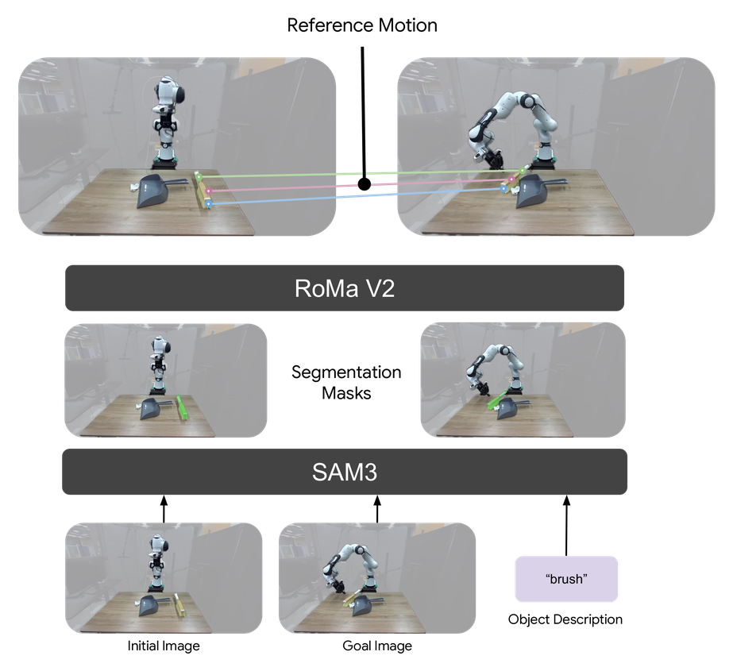

We present Unified Motion-Action (UMA) Model, an approach that uses 3D object motion trajectories as a shared interface to bridge visuomotor control and dynamics modeling. UMA treats object motion and robot actions as co-evolving variables under a masked generative objective, in which the mask pattern determines both the supervision regime during pretraining and the inference mode at deployment. Using hindsight-relabeled motion contexts and a contrastive objective that disentangles task intent from scene geometry, UMA enables multi-task pretraining across heterogeneous data sources without requiring manually annotated task instructions. At deployment, the same pretrained parameters support motion-conditioned visuomotor control, motion-based dynamics modeling, and task adaptation from few-shot demonstrations. Pretrained on a mixture of robot demonstrations, human videos, and simulated data, UMA consistently outperforms state-of-the-art baselines specialized for each inference mode.

UMA represents object motion as 3D keypoints sampled on object surfaces and tracked across time: a structured yet generic representation obtainable from monocular video, and independent of any specific embodiment. During pre-training, a flow matching objective predicts randomly masked object motion and robot actions, conditioned on a task latent and visual observation, while a contrastive loss on the task encoder keeps the task representation semantically consistent, enabling versatile task conditioning and adaptation at deployment.

Pretrained on data that never overlaps the real-world test environments, UMA outperforms the strongest baseline by 20–25 percentage points on every task, without task-specific finetuning. Predicted end-effector trajectories are overlaid.
Insertion. 6-DoF manipulation
Sweeping. Tool use
Folding. Deformable object manipulation

Success rates for motion-conditioned visuomotor control on each of the three evaluation tasks (20 trials each).
Given a candidate action sequence, the same model predicts the resulting object motion. UMA reduces motion-prediction MSE from 0.054 (PointWorld) to 0.042, producing sharper dynamics than a dedicated dynamics model.
Insertion. 6-DoF manipulation
Sweeping. Tool use
Folding. Deformable object manipulation
| Method | MSE ↓ |
|---|---|
| PointWorld | 0.054 |
| UMA w/o Sim | 0.208 |
| UMA w/o Human | 0.044 |
| UMA (Ours) | 0.042 |
Mean squared error (MSE) of predicted object motion, averaged across real-world tasks; lower is better.
UMA adapts to a new task by optimizing only the task latent on 25 demonstrations while keeping all other parameters frozen. From action-free human videos alone, it outperforms UVA by approximately 25 percentage points on every task.

Success rates for adapting to new tasks from 25 demonstrations under action supervision and motion supervision, averaged across tasks.
Demonstrations. Action-free human folding videos (4 of 25 shown)
Rollout. Folding adapted with motion supervision
Demonstrations. Robot insertion demos (4 of 25 shown)
Rollout. Insertion adapted with motion and action supervision
Since UMA is trained with a semantically meaningful task encoder under a contrastive loss, simply replacing the task latent conditions the same pretrained model on a different task specification — with no fine-tuning. We show two modalities below: following a text instruction, and reaching a goal image.
A SigLIP 2 text encoder embeds the language instruction, and a transformer maps those tokens into the task token that conditions the model.

“Put the cable in the container.”
SAM 3 segments the manipulated object in the initial and goal images, RoMa V2 matches points across them into a start-to-end reference motion, which is encoded into the task token that conditions the model.

Shelf the mug.
UMA generalizes across everyday objects and skills beyond the main evaluation suite.
Inserting the utensil
Sweeping the paper
Folding the jean
Shelving the mug
Unloading the toaster
Wrangling the cable
Tucking away the shoe
Gathering the carrot
Parking the toy car

Model design ablation over three simulated tasks.
We evaluate three architecture variants of UMA trained on simulated robot data: Action-only (no motion prediction), Separate Heads (independent decoder heads), and Dense Attention (full dense attention at same compute budget). We find that jointly predicting motion alongside actions is essential, a shared head better captures motion-action coupling, and the structured attention facilitates effective learning of spatial-temporal relationships.

Scaling behavior with training data and model size.
We evaluate the scalability of UMA by varying both the amount of training data and the model size, reporting the average success rate over the simulated tasks (100 trials each). Both data scale and parameter scale contribute to performance, with the full-data 600M-parameter model achieving the strongest result.
Execution failures dominate at 82% of total errors, with grasping accounting for the remaining 18%. UMA thus reliably identifies the correct task intent and grasp configuration, but loses precision during the action rollout. This aligns with our finding that simulation drives motion-action coupling, pointing toward further scaling of motion-action paired data, rather than richer task specification, as the most direct path to closing the remaining gap.

Breakdown of failure cases by error type.
@article{anonymous2026uma,
title = {Unified Motion-Action Modeling for Heterogeneous Robot Learning},
author = {Anonymous Authors},
journal = {OpenReview},
year = {2026}
}